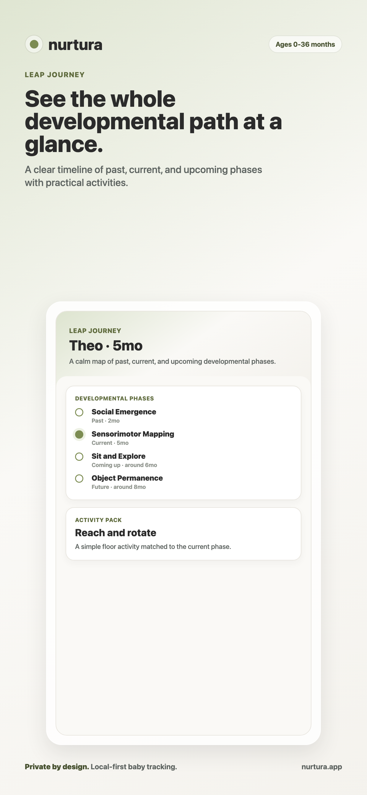
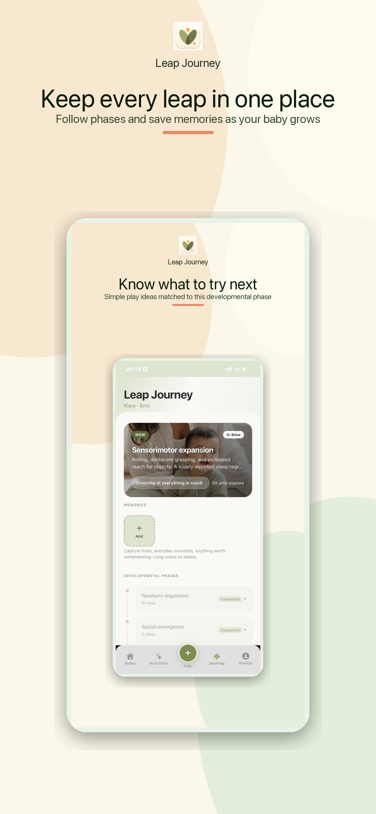

Daily check-in in seconds
Tap the big "All good today" button for routine days. Or capture sleep, fussiness, clinginess, and appetite with three-tap sliders. A streak counter celebrates consistency.

See your baby's current developmental phase, capture daily patterns, and choose a gentle age-matched activity. Premium is a one-time $2.99 unlock.
Your data stays on your device. No account required. Pregnancy mode is always free.

Know which developmental phase your baby is in right now — and why they're acting the way they are.
Fussiness, sleep disruption, and clinginess can change together. Leap Journey adds age-aware, cited context to what you record.
Age-specific activities & tips matched to your baby's phase — adapting as you log what you're seeing.
FEATURES
Built for tired hands and busy minds. One-minute check-ins, evidence-based insights, and a timeline that grows with your baby.
Tap the big "All good today" button for routine days. Or capture sleep, fussiness, clinginess, and appetite with three-tap sliders. A streak counter celebrates consistency.
Leap Journey uses transparent on-device rules to turn your entries into readable patterns with confidence and evidence cues.
See every developmental phase from newborn to toddler, with sources and activity packs you can do today.

Choose a practical activity matched to your baby's stage, try it at your own pace, and return for the next idea.

Profiles, logs, notes, memories, and photos stay on your device. No account, cloud sync, ads, or analytics.

Child profiles, logs, notes, memories, and photos stay in the app's private storage on your device. No tracking pixels, advertising, cloud sync, partner sharing, or account required.
Read the full privacy policy →